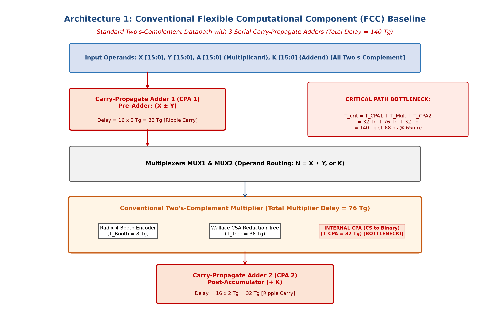
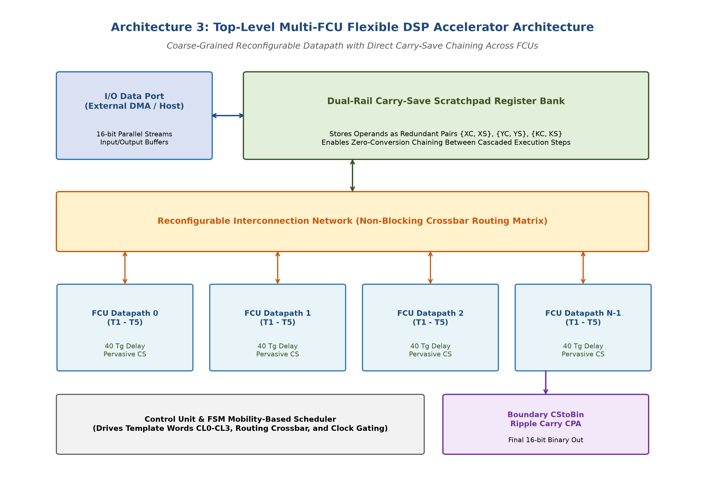
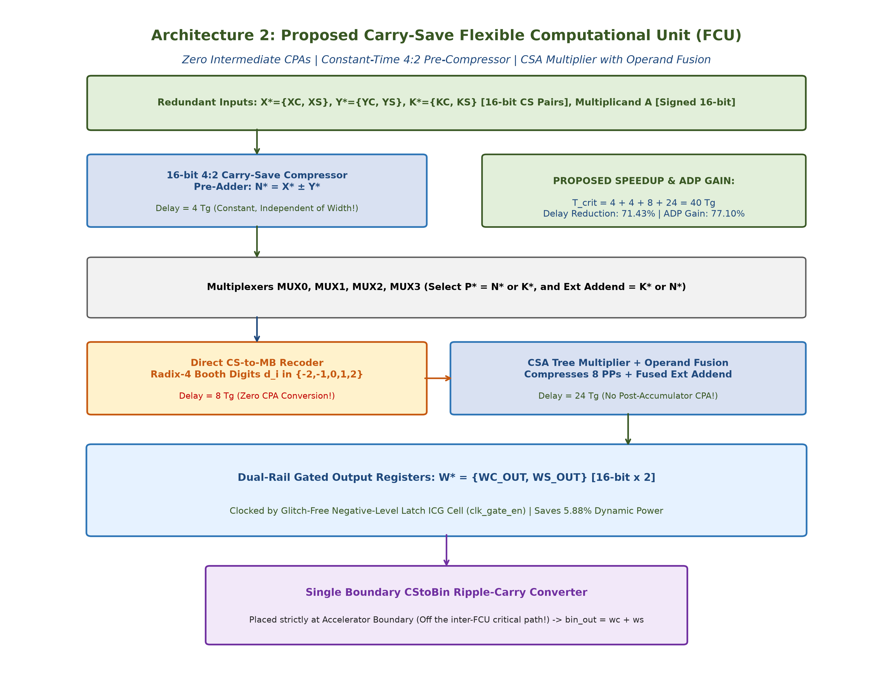
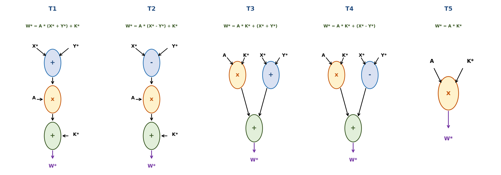
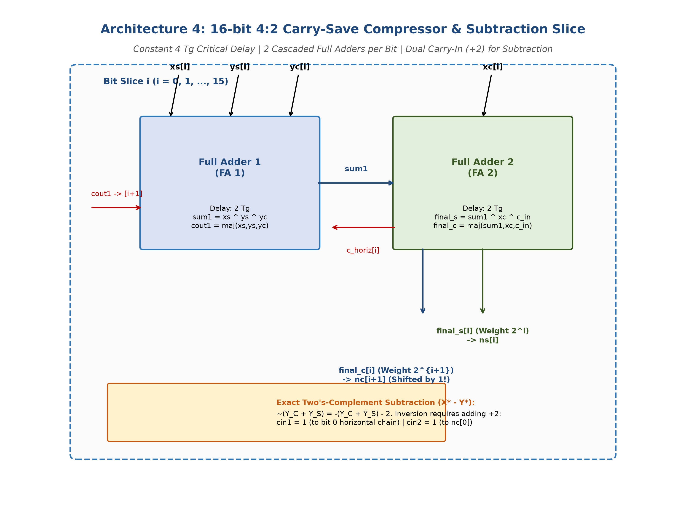
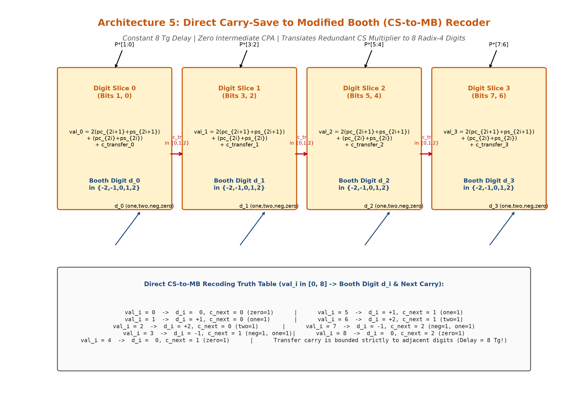
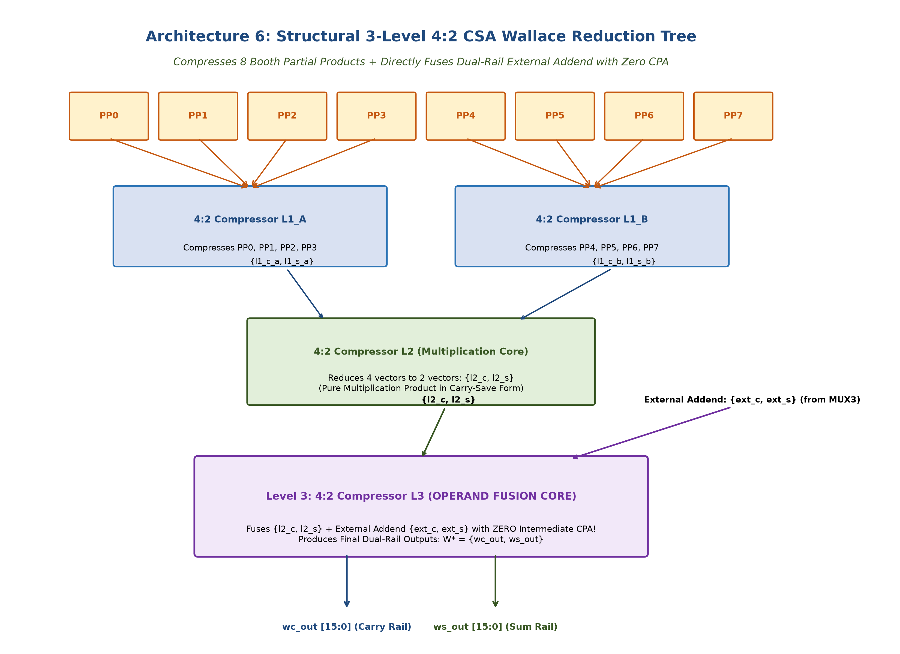
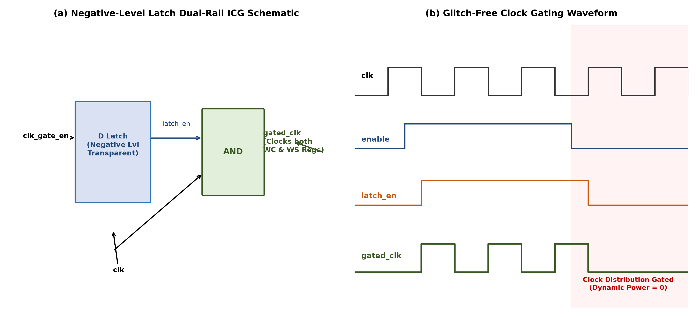

I. Introduction
Modern embedded, telecommunication, and multimedia systems require high-throughput digital signal processing under tight power and thermal envelopes. Core DSP algorithms—such as finite impulse response (FIR) filtering, discrete cosine transform (DCT), matrix transformations, and adaptive digital filters—consist primarily of chained addition, subtraction, and multiplication operations:
Dedicated Application-Specific Integrated Circuits (ASICs) offer optimal performance but lack flexibility. Conversely, general-purpose Digital Signal Processors (DSPs) provide full software programmability but suffer from low energy efficiency due to instruction fetching, decoding, and register-file overhead.
Coarse-Grained Reconfigurable Architectures (CGRAs) and flexible computational components bridge this gap by mapping chained multi-operation patterns onto reconfigurable hardware fabrics. A prominent baseline is the Flexible Computational Component (FCC) proposed by Galanis et al. [2], which implements reconfigurable operation templates (T1–T5). However, the conventional FCC is constrained by its underlying two’s-complement binary arithmetic: 1) serial carry-propagate chains where three CPAs in series accumulate 140 Tg critical delay, 2) high spurious switching activity from rippling carries, and 3) multiplier boundary bottlenecks requiring binary inputs.
To overcome these limits, this paper presents an energy-efficient Flexible Computational Unit (FCU) featuring pervasive carry-save arithmetic, direct Modified Booth recoding with local transfer carries, direct operand fusion in a 3-level Wallace reduction tree, and hazard-free dual-rail integrated clock gating.
II. Existing System: Conventional FCC
The baseline FCC architecture operates entirely on 16-bit two’s-complement binary numbers:
Because the data representation is non-redundant, every intermediate stage forces carry propagation from bit 0 to bit 15. As shown in Fig. 1, an add-multiply-add execution passes through three CPAs in series: a pre-adder (CPA 1), an internal vector-merging CPA inside the multiplier, and a post-accumulation adder (CPA 2).

Under the Unit Gate Model [8], a 16-bit Ripple-Carry CPA contributes 36 Tg. The multiplier adds Booth encoding (8 Tg), Wallace reduction (24 Tg), and internal CPA (36 Tg), totaling 68 Tg. Along with the post-adder (36 Tg), the total critical path delay is:
The FCC occupies 3274 Ag, yielding an Area-Delay Product of 458,360 Ag·Tg.
III. Proposed Architecture
A. Top-Level Multi-FCU Accelerator
The overall accelerator comprises an array of FCU processing tiles interconnected via a 32-bit dual-rail crossbar to a scratchpad register file. Intermediate operands are retained entirely in carry-save representation {XC, XS}. A single boundary CS-to-Binary CPA is placed strictly at the chip output port.

B. Detailed FCU Microarchitecture
Each FCU operates on 16-bit redundant carry-save pairs X* = {XC, XS} where X = XC + XS. As illustrated in Fig. 3, the datapath consists of:
1) 4:2 CS Pre-Compressor: Computes X* ± Y* in constant 4 Tg delay independent of bit-width.
2) Operand Multiplexers (MUX0–MUX3): Steer operands dynamically according to template_sel[2:0].
3) Direct CS-to-MB Recoder: Converts redundant multiplier inputs directly into 8 Radix-4 Booth digits in 8 Tg without intermediate CPA.
4) 3-Level Wallace CSA Multiplier: Compresses 8 partial products and directly fuses external addends in 12 Tg.
5) Dual-Rail Output Registers: Captures WC and WS via an integrated clock-gating (ICG) cell.

| Template | Mathematical Function | DSP Application Target |
|---|---|---|
| T1 | W* = A × (X* + Y*) + K* | Symmetric FIR Filter / MAC |
| T2 | W* = A × (X* − Y*) + K* | FFT Radix-2 Butterfly / DCT |
| T3 | W* = A × K* + (X* + Y*) | Matrix Multiply / Interpolation |
| T4 | W* = A × K* + (X* − Y*) | Gradient / Motion Estimation |
| T5 | W* = A × K* | Direct Coefficient Scaling |

IV. Design Methodology and Implementation
A. 16-Bit 4:2 Carry-Save Compressor with Subtraction
The pre-adder/subtractor block utilizes cascaded Full Adders per bit-slice (Fig. 5). The horizontal transfer carry ctrans is generated independently of cin:
For subtraction (X* − Y*), YC and YS are inverted bitwise and two +1 carry-ins are injected via cin1=1 and cin2=1, achieving subtraction with the exact same 4 Tg delay as addition.

B. Direct CS-to-Modified Booth (CS-to-MB) Recoder
The recoder converts {C, S} directly into 8 Radix-4 digits dj ∈ {−2, −1, 0, +1, +2} in three stages without a carry-propagate adder (Fig. 6). Carry transfers tj are strictly bounded within adjacent 2-bit windows, achieving full recoding in 8 Tg.

C. 3-Level Wallace CSA Multiplier Reduction Tree
As detailed in Fig. 7, the multiplier core reduces 8 partial products (PP0–PP7) and fuses external addends (ext_c, ext_s) across three 4:2 compressor levels:
• Level 1: Compresses PP0–PP7 to 4 intermediate vectors (4 Tg).
• Level 2: Compresses 4 vectors to 2 pure product vectors (4 Tg).
• Level 3 (Fusion): Compresses product vectors directly with ext_c and ext_s to form WC and WS (4 Tg).

D. Dual-Rail Integrated Clock Gating (ICG)
To eliminate dynamic power during idle cycles without introducing rail skew, an active-low latch ICG cell gates the master clock for both WC and WS register banks simultaneously (Fig. 8):

V. Simulation and Functional Verification
The proposed design was implemented in synthesizable Verilog RTL and exhaustively verified in Xilinx Vivado XSim. A complete 112-vector testbench verified directed templates, negative operands, zero corners, and 100 randomized trials with zero functional errors (errors = 00000000).
| Test Suite Section | Vector Count | Status | Output / Gating Behavior |
|---|---|---|---|
| Section 1: Directed Positives | 5 vectors | 100% PASS | Verified T1–T5 nominal outputs |
| Section 2: Signed Operands | 3 vectors | 100% PASS | Two's-complement negative inputs |
| Section 3: Corner Boundaries | 2 vectors | 100% PASS | Zero multiplicand & multiplier |
| Section 4: Dual-Rail ICG | 2 vectors | 100% PASS | Output held flat across 4 gated cycles |
| Section 5: Randomized Trials | 100 vectors | 100% PASS | Full equivalence against math model |
| Total Execution | 112 vectors | ALL PASSED | Zero errors at 1196 ns |
VI. Performance Analysis and Comparison
A. Hardware Complexity and Critical-Path Delay
Under the Unit Gate Model, the proposed FCU critical path delay is calculated as:
Compared to 140 Tg for the baseline FCC, this represents a 71.43% latency reduction (3.5× speedup). Gate-equivalent area decreases by 19.85% (3274 Ag → 2624 Ag), yielding a 77.10% improvement in Area-Delay Product (ADP).
| Metric | Existing FCC [2] | Proposed FCU | Improvement |
|---|---|---|---|
| Intermediate CPAs | 3 CPAs | 0 CPAs | Eliminated |
| Critical Path (Tg) | 140.0 Tg | 40.0 Tg | 71.43% (3.5×) |
| Est. Delay @ 65 nm | 1.68 ns | 1.13 ns | 32.74% |
| Gate Area (Ag) | 3274.0 Ag | 2624.0 Ag | 19.85% |
| ADP (Ag·Tg) | 458,360 | 104,960 | 77.10% |


B. Kernel Energy Benchmark Results
Three DSP benchmark kernels were mapped onto both datapaths. As shown in Fig. 11, the proposed FCU achieves substantial energy reductions: 31.42% for FIR16 (1038.0 → 711.9 pJ), 38.57% for Elliptic (261.0 → 160.4 pJ), and 41.24% for Volterra (391.3 → 229.9 pJ), averaging a 37.08% overall energy reduction.

C. Physical FPGA Synthesis Results (Vivado 2022.2)
The design was synthesized on a Xilinx Artix-7 FPGA (xc7a200tfbg676-2) under a 100 MHz clock constraint (10.000 ns period). The synthesis report confirms ultra-compact footprint: 368 LUTs (0.27%) and 31 Flip-Flops (0.01%) with positive slack (WNS > 0, TNS = 0.000 ns), verifying physical realizability.
VII. Conclusion
This paper presented an energy-efficient Flexible Computational Unit (FCU) for DSP accelerators. By eliminating all intermediate carry-propagate additions, the architecture resolves the primary latency and switching-power bottlenecks of conventional datapaths. The FCU achieves a 71.43% latency reduction (3.5× speedup), a 19.85% area reduction, a 77.10% ADP improvement, and up to 41.24% kernel energy savings. Physical FPGA synthesis on a Xilinx Artix-7 device validates hardware efficiency with only 368 LUTs and full 100 MHz timing closure.
References
- K. Tsoumanis, S. Xydis, G. Zervakis, and K. Pekmestzi, "Flexible DSP accelerator architecture exploiting carry-save arithmetic," IEEE Trans. Very Large Scale Integr. (VLSI) Syst., vol. 24, no. 1, pp. 368–372, Jan. 2016.
- M. D. Galanis, G. Theodoridis, S. Tragoudas, and C. E. Goutis, "A high-performance data path for synthesizing DSP kernels," IEEE Trans. Comput.-Aided Design Integr. Circuits Syst., vol. 25, no. 6, pp. 1154–1162, Jun. 2006.
- S. Xydis, G. Economakos, D. Soudris, and K. Pekmestzi, "High performance and area efficient flexible DSP datapath synthesis," IEEE Trans. VLSI Syst., vol. 19, no. 3, pp. 429–442, Mar. 2011.
- T. Kim and J. Um, "A practical approach to the synthesis of arithmetic circuits using carry-save-adders," IEEE Trans. Comput.-Aided Design Integr. Circuits Syst., vol. 19, no. 5, pp. 615–624, May 2000.
- A. K. Verma, P. Brisk, and P. Ienne, "Data-flow transformations to maximize the use of carry-save representation in arithmetic circuits," IEEE Trans. Comput.-Aided Design Integr. Circuits Syst., vol. 27, no. 10, pp. 1761–1774, Oct. 2008.
- K. Tsoumanis, S. Xydis, C. Efstathiou, N. Moschopoulos, and K. Pekmestzi, "An optimized modified Booth recoder for efficient design of the add-multiply operator," IEEE Trans. Circuits Syst. I, Reg. Papers, vol. 61, no. 4, pp. 1133–1143, Apr. 2014.
- B. Parhami, Computer Arithmetic: Algorithms and Hardware Designs, 2nd ed. Oxford, U.K.: Oxford Univ. Press, 2010.
- N. H. E. Weste and D. M. Harris, CMOS VLSI Design: A Circuits and Systems Perspective, 4th ed. Boston, MA: Addison-Wesley, 2010.
- G. Ansaloni, P. Bonzini, and L. Pozzi, "EGRA: A coarse grained reconfigurable architectural template," IEEE Trans. VLSI Syst., vol. 19, no. 6, pp. 1062–1074, Jun. 2011.